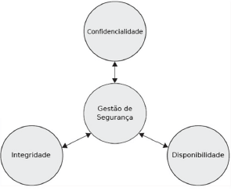
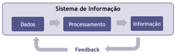
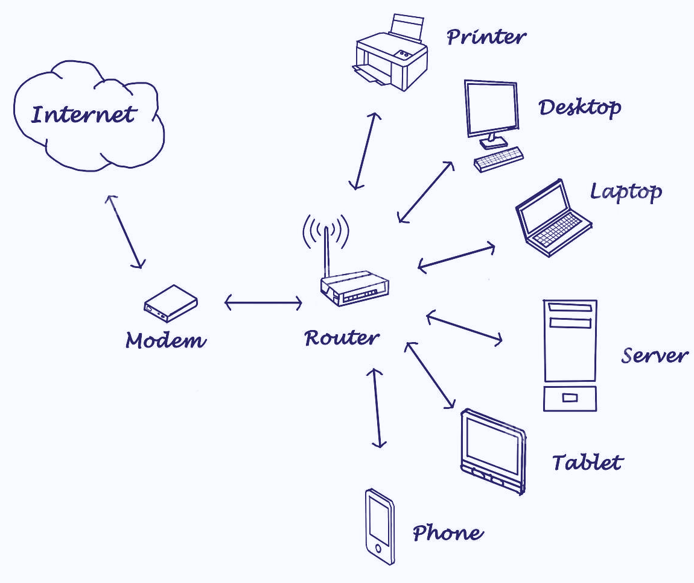

Disciplinas
Segurança da Informação. Concluído
Materiais
[UFMS Digital] Segurança da Informação - Módulo 1 - Unidade 1
Prof° ministrante: Dionisio Machado Leite Filho.
Conceitos gerais.
- Normalmente - segurança da informação relacionada apenas aos vírus e aos hackers.
- Gerenciamento de segurança - gestão de riscos, as políticas de segurança e a educação de segurança de todos os funcionários.
- Gestão de segurança da informação - determinação de objetivos, escopo, políticas, prioridades, padrões e estratégias.
- Segurança da informação - identificação adequada dos ativos de informação, atribuindo valores para esses ativos.
Princípios fundamentais de segurança.
- Três conceitos principais - confidencialidade, integridade e disponibilidade.
- Confidencialidade - capacidade de garantir que o nível necessário de sigilo seja aplicado em cada junção de dados em processamento. Prevenção contra a divulgação não autorizada dos dados.
- Integridade - é a garantia de rigor e confiabilidade das informações e sistemas e de que não ocorrerão modificações não autorizadas de dados.
- Disponibilidade - É a capacidade que os sistemas e as redes devem ter para executar e disponibilizar os dados de forma previsível e adequada às necessidades da empresa.

Informação.
- Dificuldade em separar informação e dados.
- Dado é uma representação;
- Informação acrescenta algo ao conhecimento ;
- Informação = conjunto de dados com sentido.
- Ex.: Temperatura = 38ºC;
- Possibilidade de precipitação = 90%;
- Informação = Hoje será um dia quente com possibilidade de chuvas.
Sistema de informação.
Sistema de informação - automação de todos os processos manuais sobre os dados de uma determinada área ou empresa.

Logs.
Log - registra os principais fatos, eventos, transações e qualquer informação útil que ocorreu no sistema.
Log deve: garantir que todas as informações sejam registradas, informando quem acessou, quando, como, o valor da informação e que operação foi realizada.
Log permite: em caso de perda de dados, que os sistemas de informação possam recuperar esses dados a partir do momento anterior à ocorrência da perda, para auditar as operações realizadas.
Meios de acesso.
Sistemas de informação - podem ser acessados de maneira física ou remota.
Acesso físico - segurança física relacionada ao acesso local (físico) como de acesso ao sistema de forma direta.
Acesso remoto - confirmar se esse indivíduo é quem ele afirma ser, se ele tem as credenciais necessárias e se possui os direitos ou privilégios necessários para executar as ações desejadas.
Redes de computadores.
A rede permite o compartilhamento de softwares, informações, arquivos e demais serviços.
Nela, por exemplo, pode-se ter acesso a arquivos, softwares ou impressoras que estejam em outro computador.
Uma rede de computadores é um sistema de comunicação de dados constituído por meio da interligação de computadores e outros dispositivos, com a finalidade de trocar informações e compartilhar recursos.
Redes - infraestrutura
- Rede - vários componentes: hosts, servidores, roteadores,switches ...
- Modelo de referência - TCP/IP (mais aceito em redes de computadores);
- Endereçamentos públicos e conhecidos: IP, portas de acesso;
- IP = identifica o host a ser acessado;
- Porta = identifica o processo a ser executado.
- Rede - de fato o meio mais utilizado para realizar acesso aos sistemas;
- Protocolos abertos e conhecidos;
- Difícil saber de fato quem está no outro lado da “linha”;
- Comportamentos da rede com relação ao aumento de utilização - difícil saber se é volume de acesso ou um ataque em curso;
- Engenharia social, ataques de negação de serviço, Man in the Middle, Sequestro de conexão ....